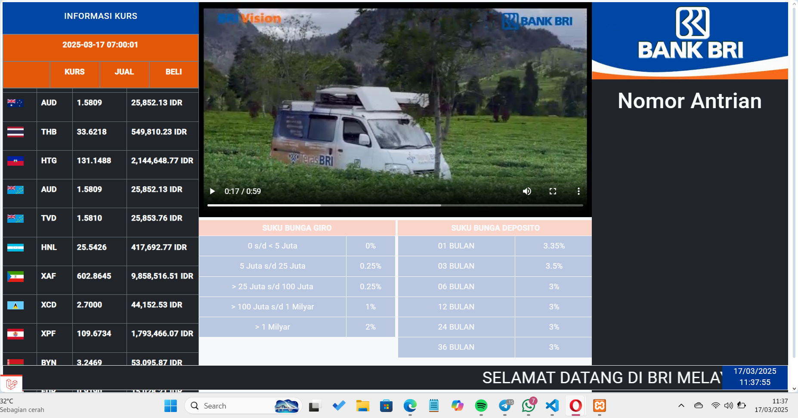

Full-Stack Developer • 2026
Antrian BRI
Queue Management System

Deskripsi Proyek
Antrian BRI adalah aplikasi manajemen antrian yang dirancang untuk membantu proses pelayanan nasabah menjadi lebih teratur, efisien, dan terpantau secara real-time. Sistem memungkinkan pengelolaan nomor antrian, monitoring status layanan, serta pelaporan aktivitas pelayanan untuk meningkatkan kualitas operasional.
Fitur Utama
- Digital Queue Management: Pengelolaan nomor antrian nasabah secara digital untuk alur yang lebih teratur.
- Real-Time Queue Monitoring: Pemantauan status antrian secara langsung dan real-time oleh nasabah maupun petugas.
- Service Counter Management: Pengelolaan loket pelayanan aktif secara fleksibel untuk efisiensi distribusi kerja.
- Queue History & Reporting: Pencatatan riwayat antrian dan pelaporan aktivitas untuk evaluasi kualitas operasional.
- Responsive Web Interface: Desain antarmuka yang responsif, optimal diakses dari berbagai jenis perangkat.
Detail Informasi
| Peran | Full-Stack Developer |
| Klien / Instansi | Bank Rakyat Indonesia (Simulasi/Akademis) |
| Tahun | 2026 |
| Tech Stack |
Laravel
PHP
MySQL
JavaScript
HTML5
CSS3
|
Keahlian Kunci
Full-Stack Development
Database Design
CRUD Application Development
System Analysis
API Integration
Responsive Web Development
Scan Project

Scan kode QR atau klik tombol di bawah untuk langsung menuju repository GitHub proyek ini.